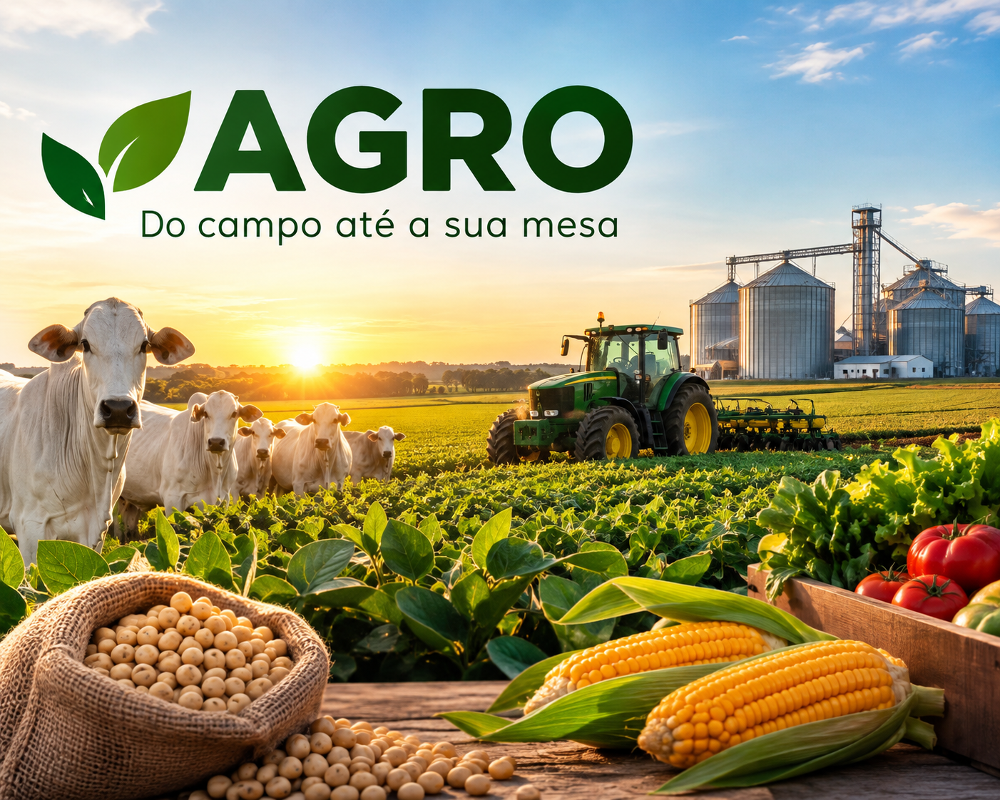

O que é o agronegócio?
Por: Paulo Renato
O agronegócio é o conjunto de atividades relacionadas à produção e à comercialização de produtos agrícolas e pecuários. Ele não envolve apenas o trabalho realizado na fazenda: inclui também as atividades antes, durante e depois da produção, como fabricação de máquinas, sementes, fertilizantes e outros insumos, produção no campo, transporte, armazenamento, industrialização e venda dos produtos ao consumidor.
Fonte: Embrapa.